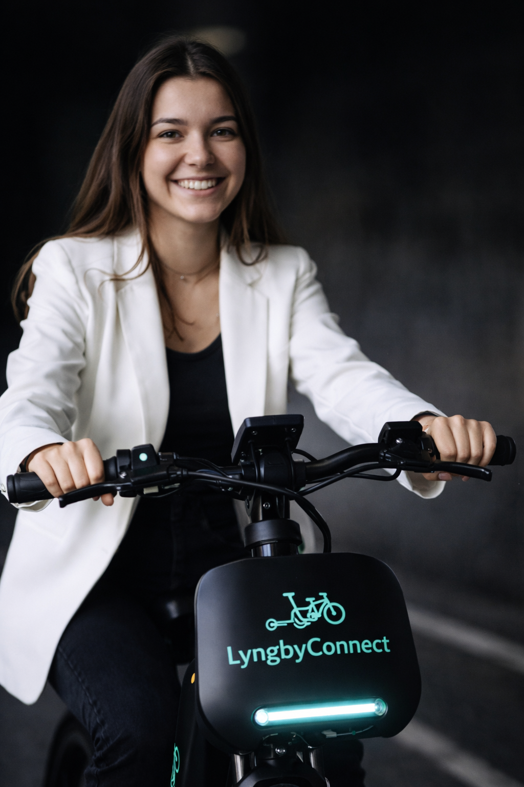

Flow 2 – Design Thinking, Figma og InDesign
I dette flow udviklede jeg LyngbyConnect, en digital løsning til udlejning af elcykler. Projektet havde fokus på brugerforståelse, Design Thinking og en sammenhængende visuel identitet.

Proces
Jeg arbejdede med research, målgruppe, idéudvikling og strukturering af brugerens vigtigste opgaver. Herefter blev løsningen skitseret og udviklet som en interaktiv prototype i Figma.
Resultat
Resultatet blev en prototype, hvor brugeren kan finde en cykel, vælge en løsning og få et tydeligt overblik over udlejningen. InDesign blev brugt til at samle og præsentere projektets materiale.
Hvad jeg lærte
Flowet gav mig erfaring med at arbejde systematisk fra research til færdig prototype og med at bruge feedback til at forbedre en løsning.